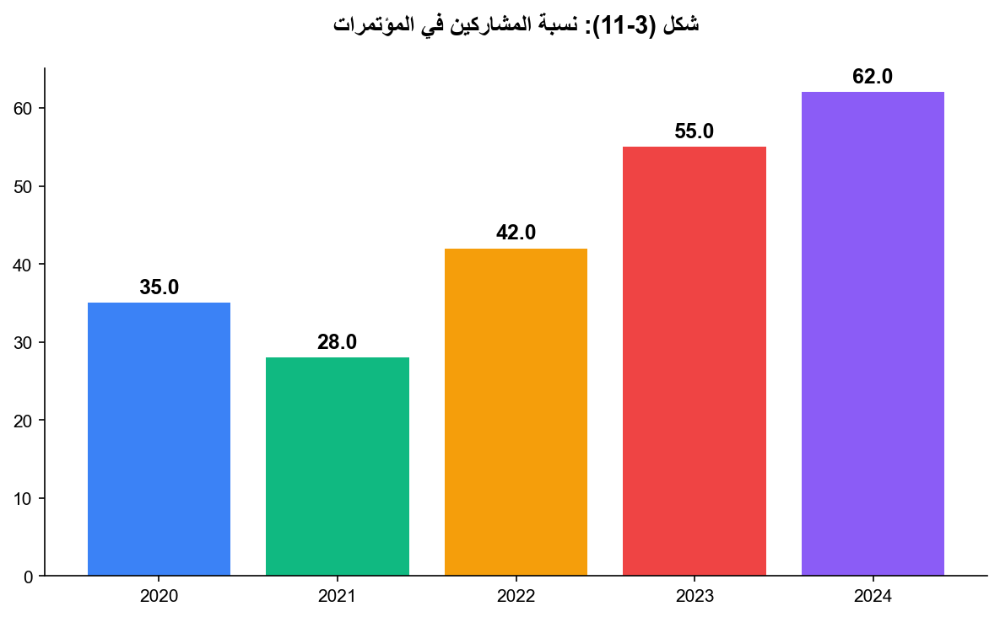

3.8: نسبة أعضاء هيئة التدريس المشاركين في المؤتمرات
📝 50 فقرة
📋 3 جدول
📊 1/0 شكل
يبين الجدول أدناه المؤتمرات التي قدمت عمادة البحث العلمي لها دعمًا وذلك للعام الجامعي 2024 ويظهر في الجدول اسم الجهة المدعومة واسم المؤتمر ومكان إقامته:
يبين الجدول أدناه الندوات العلمية التي قدمت عمادة البحث العلمي لها دعمًا وذلك للعام الجامعي 2024 ويظهر في الجدول اسم الجهة المدعومة واسم المؤتمر ومكان إقامته:
وقد شارك الباحث الأستاذ الدكتور عدنان بدران بنشر العديد من الأبحاث والكتب وإلقاء محاضرات في عدد من المؤتمرات والندوات كما يلي:
• Research Papers Published:
1. Wehbe N, Badran A.M., Baydoun S, Al-Sawalmih A, Maresca M, Baydoun E, Mesmar JE, 2024. The Antioxidant Potential and Anticancer Activity of Halodule uninervis Ethanolic Extract against Triple-Negative Breast Cancer Cells. Antioxidants 13(6):726. Doi: 10.3390/antiox13060726
2. Ayach J, Duma L, Badran A.M., Hijazi A, Martinez A, Bechelany M, Baydoun E, Hamad H., 2024. Enhancing Wastewater Depollution: Sustainable biosorption using chemically modified chitosan derivatives for efficient removal of heavy metals and dyes. Materials 3:17(11):2724. Doi: 10.3390/ma17112724
3. Rammal M, Khreiss S, Badran A.M., Mezher M, Bechelany M, Haidar C, Khalil MI, Baydoun E, El-Dakdouki MH, 2024. Antibacterial and antifungal activities of Cimbopogon winterianus and Origanum syriacum extracts and essential oils against uropathogenic bacteria and foodborne fungal isolates. Foods: 13(11):1684. Doi.org/10.3390/foods13111684
4. Sharara A, Badran A.M., Hijazi A, Albahri G, Bechelany M, Mesmar JE, Baydoun E, 2024. Comprehensive review of Cyclamen: Development, bioactive properties, and therapeutic Applications. Pharmaceuticals 17: 848. Doi:10.3390/ph17070848
5. Albahri G, Badran A.M., Abdel Baki Z, Alame M, Hijazi A, Daou A, Baydoun E, 2024. Potential anti-tumorigenic properties of diverse medicinal plants against the majority of common types of cancer. Pharmaceuticals 17: 574. Doi.org/10.3390/ph17050574
6. Abdallah R, Shaito A, Badran A.M., Baydoun S, Sobeh M, Ouchari W, Sahri N, Eid A, Mesmar J, Baydoun E, 2024. Fractionation and phytochemical composition of an ethanolic extract of Ziziphus nummularia leaves: antioxidant and anticancerous properties in triple negative human breast cancer cells. Frontiers in Pharmacology: 15 - 2024 | Doi: 10.3389/fphar.2024.1331843
7. Rammal M, Badran A.M., Haidar C, Sabbah A, Bechelany M, Awada M, Hassan KH, El-Dakdouki M, Raad MT, 2024. Cymbopogon winterianus (Java Citronella Plant): A Multi-Faceted Approach for Food Preservation, Insecticidal Effects, and Bread Application. Foods 2024:13(5):803. Doi.org/10.3390/foods13050803
8. Wehbe N., Bechelany M., Badran A.M.., Al-Sawalmih A., Mesmar J., and Baydoun E., 2024. A Phytochemical Analysis and the Pharmacological Implications of the Seagrass Halodule uninervis: An Overview. Pharmaceuticals 2024, 17, 993. doi.org/10.3390/ph17080993
9. Chebaro Z., Mesmar J., Badran A.M., Al-Sawalmih A., Maresca M., and Baydoun E., 2024. Halophila stipulacea: A Comprehensive Review of Its Phytochemical Composition and Pharmacological Activities. Biomolecules 2024, 4(8), 991. https://doi.org/10.3390/biom14080991
10. Rammal M., Kataya G., Badran A.M., Yazbeck L., Haidar C., Hassan K., Hijazi A., Meouche W., Bechelany M., El-Dakdouki M., 2024. Biochar derived from citronella and oregano waste residues for removal of organic dyes and soil amendment. Elsevier 9 (2024) 100433. doi.org/10.1016/j.crgsc.2024.100433
11. Kataya G., El Charif Z., Badran A.M., Cornu D., Bechelany M., Hijazi A., Sukkariyah B., Issa M., 2024. Evaluating the impact of different biochar types on wheat germination. Nature, Sci Rep 14, 28663 (2024). https://doi.org/10.1038/s41598-024-76765-4
1. Adnan Badran (eic), Joelle Mesmar, Elias Baydoun (eds), Higher Education in the Arab World: Digital Transformation, Springer.Nature, 2024, (مدعوم من عمادة البحث العلمي 10 الاف ديناراً).
• Chapters in Books Published:
1. Badran A. M. Digital Transformation: Inducing an Innovative Environment for Sustainable Development Springer.Nature, 2024. A.Badran et al. (eds), Higher Education in the Arab World: Digital Transformation, https://doi.org/10.1007/978-3-031-70779-7_1,. Pps 1-12
• Papers Presented by Badran A. M in Public Seminars and Conferences:
1. عدنان بدران، إِدارَةُ المِياهِ وَالطاقَةِ وَالأَمْنِ الغذائي ي وَتَغَيُّرُ المُناخِ فِي الاِقْتِصادِ الأَخْضَرِ، 2024.
2. عدنان بدران، اكتشاف الموهوبين ورعايتهم في عصر الرّقمية: رؤى وتجارب إبداعية؟، المؤتمر العالمي الدولي السابع عشر لرعاية الموهوبين والمتفوقين، المجل العربي للموهوبين والمتفوقين، جامعة البتر، 2024.
3. عدنان بدران، واقع البحث العلمي وأثره في الاقتصاد الأردني، 2024.
4. عدنان بدران، الاقتصاد والتكنولوجيا الرقمية، المؤتمر الاقتصادي العاشر: “الاقتصاد الرقمي والتكنولوجيا الرقمية"، الجمعية الأردنية للبحث العلمي والريادة والإبداع بالاشتراك مع جامعة البترا، 2024.
5. عدنان بدران، محور المياه والطاقة والغاز كمدخلات الإنتاج، الاجتماع التحضيري الثروات الوطنية ومعادن البحر الميت، 2024.
6. عدنان بدران، مَنْظُومَةُ التَعْلِيمِ: واقِعٌ وَتَطَلُّعاتٌ، الملتقى التعليمي الثالث الخاص في المناهج والتعليم العام والتعليم العالي والمهارات المهنية، 2024.
7. عدنان بدران، موسى الناظر .... كما عرفته في كلية العلوم بالجامعة الأردنية، مؤسسة عبد الحميد شومان فعالية تكريمية للأستاذ الدكتور موسى الناظر، 2024.
8. Badran A.M., Biological Diversity and Human Resources, Islamic World Academy of Sciences, IAS Newsletter, volume 32, number 56, pps 6-7, February 2024.
9. Badran A.M., Higher Education in The Arab World: Artificial Intelligence, Islamic World Academy of Sciences, IAS Newsletter, volume 32, number 56, pps 11-13, February 2024.
10. Badran A.M., World Conservation Efforts for Biological Diversity, Islamic World Academy of Sciences, IAS Newsletter, volume 32, number 57, pps 4-5, March 2024.
11. Badran A.M., Fractionation and Phytochemical Composition of An Ethanolic Extract of Ziziphus Nummularia Leaves: Antioxidant and Anticancerous Properties in Human Triple Negative Breast Cancer Cells (abstract), Islamic World Academy of Sciences, IAS Newsletter, volume 32, number 57, pp 21, March 2024.
12. Badran A.M., Agenda 21: Resources for Development, Islamic World Academy of Sciences, IAS Newsletter, volume 32, number 58, pps 2-3, April 2024.
13. Badran A.M., Cymbopogon Winterianus (Java Citronella Plant): A Multi-Faceted Approach for Food Preservation, Insecticidal Effects, And Bread Application (abstract), Islamic World Academy of Sciences, IAS Newsletter, volume 32, number 58, pp 7, April 2024.
14. Badran A.M., Water Sustains Life, The Environment and Economic Development, Islamic World Academy of Sciences, IAS Newsletter, volume 32, number 59, pps 4-6, May 2024.
15. Badran A.M., The Triangle: Energy, Water and Food Security Nexus for The Mena Region, Islamic World Academy of Sciences, IAS Newsletter, volume 32, number 59, pp 7, May 2024.
16. Badran A.M., Closing the Gap of STI, Islamic World Academy of Sciences, IAS Newsletter, volume 32, number 59, pps 10-14, May 2024.
17. Badran A.M., Sustainable Development in a Balanced Ecosphere, Islamic World Academy of Sciences, IAS Newsletter, volume 32, number 60, pp 2, July 2024.
18. Badran A.M., The Role of Education in The Protection of The Environment, Islamic World Academy of Sciences, IAS Newsletter, volume 32, number 60, pp 7, July 2024.
19. Badran A.M., Enhancing Wastewater Depollution: Sustainable Biosorption Using Chemically Modified Chitosan Derivatives for Efficient Removal of Heavy Metals and DyeS (abstract), Islamic World Academy of Sciences, IAS Newsletter, volume 32, number 60, pp 13, July 2024.
20. Badran A.M., Call to Earth Address of Prof. Adnan Badran, President of The Islamic World Academy of Sciences (IAS) To The 25th Conference of Islamic World Academy of Sciences On “Water-Energy-Food-Ecosystem Nexus for The Security of The OIC Countries”, Islamabad, Pakistan, Islamic World Academy of Sciences, IAS Newsletter, volume 32, number 61, pps 8-9, August 2024.
21. Badran A.M. Managing Water-Energy-Food Security-Ecosphere Nexus, Islamic World Academy of Sciences, IAS Newsletter, volume 32, number 61, pp 14, August 2024.
22. Badran A.M., Science Potential for Sustainable Water Policy, Islamic World Academy of Sciences, IAS Newsletter, volume 32, number 62, pp 5, September 2024.
23. Badran A.M., FAO Approach to The Water-Energy-Food-Ecosphere Nexus (WEFE), Islamic World Academy of Sciences, IAS Newsletter, volume 32, number 62, pp 7, September 2024.
24. Badran A.M., Halophila Stipulacea: A Comprehensive Review of Its Phytochemical Composition and Pharmacological Activities (abstract), Islamic World Academy of Sciences, IAS Newsletter, volume 32, number 62, pp 11, September 2024.
25. Badran A.M., Comments on HRH Prince El Hassan On His Article in The Modern Diplomacy Entitled: Reforming the International Order: Towards A New Humanitarian Paradigm, Islamic World Academy of Sciences, IAS Newsletter, volume 32, number 63, pp 3, November 2024.
26. Badran A.M., Potential Anti-Tumorigenic Properties of Diverse Medicinal Plants Against the Majority of Common Types of Cancer (abstract), Islamic World Academy of Sciences, IAS Newsletter, volume 32, number 63, pp 6, November 2024.
27. Badran A.M., Antibacterial and Antifungal Activities of Cimbopogon Winterianus And Origanum Syriacum Extracts and Essential Oils Against Uropathogenic Bacteria and Foodborne Fungal Isolates (abstract), Islamic World Academy of Sciences, IAS Newsletter, volume 32, number 63, pp 7, November 2024.
28. Badran A.M., Artificial Intelligence (AI) In Higher Education, Islamic World Academy of Sciences, IAS Newsletter, volume 32, number 64, pps 3-4, December 2024.
29. Badran A.M., The Antioxidant Potential and Anticancer Activity of Halodule Uninervis Ethanolic Extract Against Triple-Negative Breast Cancer Cells, Islamic World Academy of Sciences (abstract), IAS Newsletter, volume 32, number 64, pp 10, December 2024.
30. Badran A.M., Comprehensive Review of Cyclamen: Development, Bioactive Properties, and Therapeutic Applications (abstract), Islamic World Academy of Sciences, IAS Newsletter, volume 32, number 64, pp 11, December 2024.
المعيار الرابع : إدارة الموارد البشرية والمالية

جدول (3-13) : عدد أعضاء هيئة التدريس المشاركين في المؤتمرات للعام 2024.
📊 52 صف من البيانات
| الرقم | اسم الباحث | الكلية | عنوان المؤتمر | الجهة المنظمة | المكان | اسم البحث |
|---|---|---|---|---|---|---|
| 1 | أ.د. فيصل أبو الرب | العلوم الإدارية والمالية | IEEE 14th International Conference on Pattern Recognition Systems | University of Westminster (UK), collaboration with IEEE | لندن - المملكة المتحدة | IEEE 14th International Conference on Pattern Recognition Systems |
| 2 | د. علي المقوسي | تكنولوجيا المعلومات | 6th International Conference on Statistics: Theory and Applications (ICSTA 2024) | INTERNATIONAL ASET INC | Barcelona, Spain | Enhancing Security in Remote Laboratory Environments: A Layered Approach |
| 3 | د. هشام العميان | الآداب والعلوم | The 18th International Conference on e-Learning and Digital Learning (ELDL 2024) | International Association for Development of the Information of Society | Budapest, Hungary | Advancing Early Childhood Education: A Conceptual Framework for Artificial Intel |
| 4 | د. حسام فاخوري | تكنولوجيا المعلومات | 2nd IEEE International Conference on Artificial Intelligence, Blockchain, and In | Central Michigan University (CMU), IEEE Northeast Michigan section USA | Michigan, USA | Hybrid Four Vector Intelligent Optimizer with SaDE for Solving Robot Gripper Opt |
| 5 | د. حازم النجار | تكنولوجيا المعلومات | 2nd International Conference on Cyber Resilience (ICCR2024) | Skyline University College, Universiti Kebangsaan Malaysia (IIKM), collaborati | دبي -الإمارات | Enhancing Image Security with Rossler Attractor-Based Encryption |
| 6 | د. جمال زراقو | تكنولوجيا المعلومات | 2nd International Conference on Cyber Resilience (ICCR2024) | Skyline University College, Universiti Kebangsaan Malaysia (IIKM), collaborati | دبي -الإمارات | Vegetation Change Detection in Amman, Jordan using Remote Sensing and GIS |
| 7 | د. حسام فاخوري | تكنولوجيا المعلومات | 2nd International Conference on Cyber Resilience (ICCR2024) | Skyline University College, Universiti Kebangsaan Malaysia (IIKM), collaborati | دبي -الإمارات | AI-Driven Solutions for Social Engineering Attacks: Detection, Prevention, and R |
| 8 | د. حسام فاخوري | تكنولوجيا المعلومات | 2nd International Conference on Cyber Resilience (ICCR2024) | Skyline University College, Universiti Kebangsaan Malaysia (IIKM), collaborati | دبي -الإمارات | Comprehensive Overview of Challenges faced by Digital forensic |
| 9 | د. محمد الخالدي | العلوم الإدارية والمالية | 2nd International Conference on Cyber Resilience (ICCR2024) | Skyline University College, Universiti Kebangsaan Malaysia (IIKM), collaborati | دبي -الإمارات | Securing Digital Finance: Applying Machine Learning for Fraud Analysis in Fintec |
| 10 | د. حازم النجار | تكنولوجيا المعلومات | 2nd International Conference on Cyber Resilience (ICCR2024) | Skyline University College, Universiti Kebangsaan Malaysia (IIKM), collaborati | دبي -الإمارات | Decision Tree-Based IoT Botnet Attack Detection |
| 11 | د. سلام عماري | تكنولوجيا المعلومات | 2nd International Conference on Cyber Resilience (ICCR2024) | Skyline University College, Universiti Kebangsaan Malaysia (IIKM), collaborati | دبي -الإمارات | Comparative Evaluation of Bio-inspired Feature Selection Methods in Intrusion De |
| 12 | د. شريف مخامة | تكنولوجيا المعلومات | 2nd International Conference on Cyber Resilience (ICCR2024) | Skyline University College, Universiti Kebangsaan Malaysia (IIKM), collaborati | دبي -الإمارات | Intrusion Detection System using Modified Arithmetic Optimization Algorithm for |
| 13 | د. سلام عماري | تكنولوجيا المعلومات | 2nd International Conference on Cyber Resilience (ICCR2024) | Skyline University College, Universiti Kebangsaan Malaysia (IIKM), collaborati | دبي -الإمارات | Digital Forensics Meets Blockchain: Enhancing Evidence Authenticity and Traceabi |
| 14 | د. بلال صوان | العلوم الإدارية والمالية | 2nd International Conference on Cyber Resilience (ICCR2024) | Skyline University College, Universiti Kebangsaan Malaysia (IIKM), collaborati | دبي -الإمارات | PDF Malware Detection: A Hybrid Approach Using Random Forest and K-Nearest Neigh |
| 15 | د. شريف مخامة | تكنولوجيا المعلومات | 2nd International Conference on Cyber Resilience (ICCR2024) | Skyline University College, Universiti Kebangsaan Malaysia (IIKM), collaborati | دبي -الإمارات | Marine Predators Algorithm for Energy Scheduling Problem Using Renewable Energy |
| 16 | د. حازم النجار | تكنولوجيا المعلومات | 2nd International Conference on Cyber Resilience (ICCR2024) | Skyline University College, Universiti Kebangsaan Malaysia (IIKM), collaborati | دبي -الإمارات | Improving the Efficiency of Smart Grid Scheduling: A Linear Regression Model wit |
| 17 | د. علاء أبو سماحة | تكنولوجيا المعلومات | 2nd International Conference on Cyber Resilience (ICCR2024) | Skyline University College, Universiti Kebangsaan Malaysia (IIKM), collaborati | دبي -الإمارات | Hybrid PSO-Naive Bayes Algorithm based COVID-19 Prediction Model (2) |
| 18 | د. حسام محمد مصطفى | تكنولوجيا المعلومات | 2nd International Conference on Cyber Resilience (ICCR2024) | Skyline University College, Universiti Kebangsaan Malaysia (IIKM), collaborati | دبي -الإمارات | Cloud Computing Malware Detection Using Feature Selection Based on Optimized Whi |
| 19 | د. محمد فاشة | العلوم الإدارية والمالية | 2nd International Conference on Cyber Resilience (ICCR2024) | Skyline University College, Universiti Kebangsaan Malaysia (IIKM), collaborati | دبي -الإمارات | itigating the OWASP Top 10 For Large Language Models Applications using Intellig |
| 20 | أ. د. فيصل أبو الرب | العلوم الإدارية والمالية | 2nd International Conference on Cyber Resilience (ICCR2024) | Skyline University College, Universiti Kebangsaan Malaysia (IIKM), collaborati | دبي -الإمارات | The Impact of Big Data Analytics Capabilities on Decision Making at the Telecomm |
| 21 | د. سلام عماري | تكنولوجيا المعلومات | 2nd International Conference on Cyber Resilience (ICCR2024) | Skyline University College, Universiti Kebangsaan Malaysia (IIKM), collaborati | دبي -الإمارات | Integrating Enhanced Security Protocols with Moving Object Detection: A Yolo-Bas |
| 22 | أ. د. مياس الريماوي | الصيدلة والعلوم الطبية | 2nd International Conference on Cyber Resilience (ICCR2024) | Skyline University College, Universiti Kebangsaan Malaysia (IIKM), collaborati | دبي -الإمارات | Clinical Applications of AI in Post-Cancer Rehabilitation |
| 23 | أ. د. فيصل أبو الرب | العلوم الإدارية والمالية | 2nd International Conference on Cyber Resilience (ICCR2024) | Skyline University College, Universiti Kebangsaan Malaysia (IIKM), collaborati | دبي -الإمارات | AI-Driven Psychological Support and Cognitive Rehabilitation Strategies in Post- |
| 24 | د. مي النشاشيبي | تكنولوجيا المعلومات | 2nd International Conference on Cyber Resilience (ICCR2024) | Skyline University College, Universiti Kebangsaan Malaysia (IIKM), collaborati | دبي -الإمارات | Machine Learning for Enhanced Autism Screening: A Comparative Evaluation of Clas |
| 25 | د. عبدالرؤوف اشتيوي | تكنولوجيا المعلومات | 2nd International Conference on Cyber Resilience (ICCR2024) | Skyline University College, Universiti Kebangsaan Malaysia (IIKM), collaborati | دبي -الإمارات | Realizing the Potential of Metaverse to Revolutionize the Future of Healthcare |
| 26 | د. عبدالرؤوف اشتيوي | تكنولوجيا المعلومات | 2nd International Conference on Cyber Resilience (ICCR2024) | Skyline University College, Universiti Kebangsaan Malaysia (IIKM), collaborati | دبي -الإمارات | Securing Emerging IoT Environments with Super Learner Ensembles |
| 27 | د. محمد العثمان | تكنولوجيا المعلومات | 2nd International Conference on Cyber Resilience (ICCR2024) | Skyline University College, Universiti Kebangsaan Malaysia (IIKM), collaborati | دبي -الإمارات | A Framework for Cybersecurity in the Metaverse |
| 28 | د. محمد العثمان | تكنولوجيا المعلومات | 2nd International Conference on Cyber Resilience (ICCR2024) | Skyline University College, Universiti Kebangsaan Malaysia (IIKM), collaborati | دبي -الإمارات | IoT Security Challenges in Modern Smart Cities |
| 29 | أ. د. مياس الريماوي | الصيدلة والعلوم الطبية | 2nd International Conference on Cyber Resilience (ICCR2024) | Skyline University College, Universiti Kebangsaan Malaysia (IIKM), collaborati | دبي -الإمارات | Applications of AI in Biomedical Genomics and Pharmaceuticals |
| 30 | أ. د. فيصل العكايلة | الصيدلة والعلوم الطبية | 2nd International Conference on Cyber Resilience (ICCR2024) | Skyline University College, Universiti Kebangsaan Malaysia (IIKM), collaborati | دبي -الإمارات | AI-Driven Physical Rehabilitation Strategies in Post-Cancer Care |
| 31 | د. محمد نوفل | العلوم الإدارية والمالية | 2nd International Conference on Cyber Resilience (ICCR2024) | Skyline University College, Universiti Kebangsaan Malaysia (IIKM), collaborati | دبي -الإمارات | A Framework for Using Blockchain-Enabled Supply Chain Management to Enhance Tran |
| 32 | د. محمد العثمان | تكنولوجيا المعلومات | 2nd International Conference on Cyber Resilience (ICCR2024) | Skyline University College, Universiti Kebangsaan Malaysia (IIKM), collaborati | دبي -الإمارات | Malware Threats Targeting Cryptocurrency: A Comparative Study |
| 33 | عطوفة أ. د. رامي عبد الرحيم الأكرم | الآداب والعلوم | 2nd International Conference on Cyber Resilience (ICCR2024) | Skyline University College, Universiti Kebangsaan Malaysia (IIKM), collaborati | دبي -الإمارات | Integrative Analysis of Genomic Data Types and AI Methodologies in Healthcare Ap |
| 34 | أ. د. فيصل العكايلة | الصيدلة والعلوم الطبية | 2nd International Conference on Cyber Resilience (ICCR2024) | Skyline University College, Universiti Kebangsaan Malaysia (IIKM), collaborati | دبي -الإمارات | Trust, Ethics, and User-Centric Design in AI-Integrated Genomics |
| 35 | د. خليل عمر | تكنولوجيا المعلومات | 2nd International Conference on Cyber Resilience (ICCR2024) | Skyline University College, Universiti Kebangsaan Malaysia (IIKM), collaborati | دبي -الإمارات | Challenges of Distance Learning During the Coronavirus (COVID-19) Pandemic - A C |
| 36 | أ. د. نهى الخليلي | تكنولوجيا المعلومات | 2nd International Conference on Cyber Resilience (ICCR2024) | Skyline University College, Universiti Kebangsaan Malaysia (IIKM), collaborati | دبي -الإمارات | Empowering Learning Analytics with Business Intelligenc |
| 37 | د. شريف مخامة | تكنولوجيا المعلومات | 2nd International Conference on Cyber Resilience (ICCR2024) | Skyline University College, Universiti Kebangsaan Malaysia (IIKM), collaborati | دبي -الإمارات | Modified White Shark Optimizer for Gene Selection Optimization Problem |
| 38 | أ. د. نهى الخليلي | تكنولوجيا المعلومات | 2nd International Conference on Cyber Resilience (ICCR2024) | Skyline University College, Universiti Kebangsaan Malaysia (IIKM), collaborati | دبي -الإمارات | Impact of Generative Artificial Intelligence on Learning: A Case Study at the Un |
| 39 | د. عبد الرحمن الناطور | العلوم الإدارية والمالية | 2nd International Conference on Cyber Resilience (ICCR2024) | Skyline University College, Universiti Kebangsaan Malaysia (IIKM), collaborati | دبي -الإمارات | The Role of Forensic Accounting Skills and CAATTs Application in Enhancing Firm’ |
| 40 | د. نضال الصالحي | العلوم الإدارية والمالية | 2nd International Conference on Cyber Resilience (ICCR2024) | Skyline University College, Universiti Kebangsaan Malaysia (IIKM), collaborati | دبي -الإمارات | The Impact of Organizational Learning Capability on Organizational Agility |
| 41 | د. عبد الكريم البنا | تكنولوجيا المعلومات | 2nd International Conference on Cyber Resilience (ICCR2024) | Skyline University College, Universiti Kebangsaan Malaysia (IIKM), collaborati | دبي -الإمارات | The Impact of Stuttering Event Representation on Detection Performance |
| 42 | د. أنس كنعان | العلوم الإدارية والمالية | 2nd International Conference on Cyber Resilience (ICCR2024) | Skyline University College, Universiti Kebangsaan Malaysia (IIKM), collaborati | دبي -الإمارات | Cybersecurity Resilience for Business: A Comprehensive Model for Proactive Defen |
| 43 | د. خليل عمر | تكنولوجيا المعلومات | 2nd International Conference on Cyber Resilience (ICCR2024) | Skyline University College, Universiti Kebangsaan Malaysia (IIKM), collaborati | دبي -الإمارات | A Comprehensive Model for Securing Metaverse |
| 44 | د. سائد زيغان | العلوم الإدارية والمالية | 2nd International Conference on Cyber Resilience (ICCR2024) | Skyline University College, Universiti Kebangsaan Malaysia (IIKM), collaborati | دبي -الإمارات | Navigating the Cyber Landscape: A Framework for Transitioning from Business Cont |
| 45 | د. ايمان الذويب | تكنولوجيا المعلومات | 2nd International Conference on Cyber Resilience (ICCR2024) | Skyline University College, Universiti Kebangsaan Malaysia (IIKM), collaborati | دبي -الإمارات | Automated Machine Learning for Information Management and Information Systems: A |
| 46 | د. نسيم مطر | العلوم الإدارية والمالية | 2nd International Conference on Cyber Resilience (ICCR2024) | Skyline University College, Universiti Kebangsaan Malaysia (IIKM), collaborati | دبي -الإمارات | Evaluating Models Performance for Credit Risk Detection for Imbalanced Data |
| 47 | د. حسام فاخوري | تكنولوجيا المعلومات | 2nd International Conference on Cyber Resilience (ICCR2024) | Skyline University College, Universiti Kebangsaan Malaysia (IIKM), collaborati | دبي -الإمارات | Securing Data and Digital Communication in Artificial Intelligence Environment |
| 48 | د. واصف مطر | العلوم الإدارية والمالية | 2nd International Conference on Cyber Resilience (ICCR2024) | Skyline University College, Universiti Kebangsaan Malaysia (IIKM), collaborati | دبي -الإمارات | Intention to use ChatGPT from healthcare workers: Jordan Case study |
| 49 | د. محمد الخالدي | العلوم الإدارية والمالية | 2nd International Conference on Cyber Resilience (ICCR2024) | Skyline University College, Universiti Kebangsaan Malaysia (IIKM), collaborati | دبي -الإمارات | Blockchain as a Resilient Infrastructure for e-Business Transactions |
| 50 | د. أحمد شبيطة | تكنولوجيا المعلومات | 2nd International Conference on Cyber Resilience (ICCR2024) | Skyline University College, Universiti Kebangsaan Malaysia (IIKM), collaborati | دبي -الإمارات | Technological and Societal Shifts in Virtual Worlds: A Comparative Perspective |
| 51 | د. خليل عمر | تكنولوجيا المعلومات | 2nd International Conference on Cyber Resilience (ICCR2024) | Skyline University College, Universiti Kebangsaan Malaysia (IIKM), collaborati | دبي -الإمارات | Analyzing Jordanian Higher Education Instructors’ Perception towards Metaverseba |
| 52 | د. فراس عمر | العلوم الإدارية والمالية | 2nd International Conference on Cyber Resilience (ICCR2024) | Skyline University College, Universiti Kebangsaan Malaysia (IIKM), collaborati | دبي -الإمارات | Implementing Corporate Social Responsibility for Sustainable Education: A Compre |
الجدول (3-14) : المؤتمرات التي قدمت جامعة البترا الدعم لها للعام 2024.
📊 5 صف من البيانات
| الجهة المدعومة | اسم المؤتمر | المكان |
|---|---|---|
| الأكاديمية العربية للعلوم | Higher Education in the Arab World: Artificial Intelligence | بيروت-لبنان |
| المركز الريادي الأردني | البيئة الآمنة والتنمية المستدامة | عمان – الاردن |
| مؤسسة الياسمين لعقد الدورات التدريبية | منظومة التعليم في الأردن (واقع وتطلعات) | عمان – الاردن |
| المجلس العربي للموهوبين والمتفوقين | الموهبة والتفوق والذكاء الاصطناعي في التعليم: رؤى مستقبلية | جامعة البترا |
| الجمعية الأردنية للبحث العلمي والريادة والإبداع | عمان – الاردن |
الجدول (3-15) : الندوات التي قدمت لها جامعة البترا الدعم للعام 2024.
📊 3 صف من البيانات
| الكلية | القسم | عنوان الندوة |
|---|---|---|
| كلية الصيدلة والعلوم الطبية | قسم التغذية | Innovative food Technology Trends |
| كلية العمارة والتصميم | قسم هندسة العمارة | صامدون- التراث والتغير المناخي |
| كلية تكنولوجيا المعلومات | قسم أمن المعلومات | Information Technology for the Society |